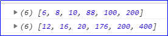
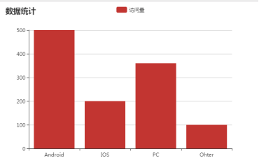
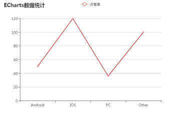

原文连接:https://www.cnblogs.com/rope/p/10723128.html
一、ES6语法
ES6中对数组新增了几个函数：map()、filter()、reduce()
ES5新增的forEach()。
都是一些语法糖。
1.1 forEach()遍历数组
forEach()方法用来循环遍历数组，方法中的function回调函数接收3个参数
参数1是遍历的数组内容(item)；参数2是对应的数组索引(index)，参数3是是数组本身(array)。
[].forEach(function(item,index,array){
...
})
var arr = ["白板","幺鸡","红中","发财","八万"];
arr.forEach(function(item,index,array){
console.log(item,index,array)
})
forEach函数没有返回值
for今后是创建数组，遍历或操作数组可以交给forEach方法。
1.2 map()映射
map方法的作用，“映射”也就是原数组被“映射”成对应的新数组。
[].map(function(item,index,array){
...
})
var arr = ["白板","幺鸡","红中","发财","八万"];
arr.map(function(item,index,array){
console.log(item,index,array)
}) 
案例：比如创建一个新数组，新数组的每一项是原数组的两倍
var arr1 = [6,8,10,88,100,200];
var arr2 = arr1.map(function(item){
return item * 2;
})
console.log(arr1)
console.log(arr2)
map()函数本质是依次遍历原数组中的每一项，将每一项都执行一遍函数中的语句，返回一个新的数组。
提示：
l 函数需要有return值，如果没有，数组所有想都被映射成undefined
l map返回的数组一定和原数组长度一样。
1.3 filter()过滤
filter为“过滤”、“筛选”之意，指从原数组中filter某些项后，返回过滤后的新数组，用法和map相似。
案例：从原数组中，挑选所有的偶数，返回新的数组。
var arr1 = [6,8,10,77,88,100,200,1,3,5];
var arr2 = arr1.filter(function(item){
return item % 2 == 0;
});
console.log(arr1)
console.log(arr2)概述：arr中的每一项依次的执行函数，filter的回调函数需要返回布尔值，true则将值返回到新数组中，false则舍弃，进入下一次循环。
filter和map相同：都会遍历数组每一项。
filter和map不相同：map返回数组不会少项，filter可能会少项。
1.4取整运算符
console.log(~~11.5);
console.log(~~"11.5");
console.log(~~"10px");
console.log(~~true);
console.log(~~false);二、underscore.js
jQuery是DOM之王，那么underscore就是数学之王（擅长计算）。
Underscore一个JavaScript实用库，提供了一整套函数式编程的实用功能，但是没有扩展任何JavaScript内置对象。
Underscore提供了100多个函数,包括常用的: map, filter, invoke 当然还有更多专业的辅助函数,如:函数绑定, JavaScript模板功能,创建快速索引, 强类型相等测试, 等等.
Underscore不依赖环境，不限制使用场景，可以加载到HTML中在浏览器运行，也可以中Nodejs服务器环境中使用。封装了一堆实用函数，这些函数基本都是针对：数组、对象、函数的。
中文文档：http://www.css88.com/archives/5443
CDN公共资源库：http://cdn.code.baidu.com/
生成0~100的随机数：
_.random(0,100); //生成0~100的随机数创建一个范围整数数组：
_.range(1,10) //[1, 2, 3, 4, 5, 6, 7, 8, 9]取数组中的最大和最小值：
var num = [10, 5, 100, 2, 1000];
console.log(_.min(num));
console.log(_.max(num));把数组转成对象：
_.object(['a', 'b', 'c'], [10, 20, 30]); //{ a: 10, b: 20, c: 30 }each()遍历方法，对集合循环操作，可以遍历数组、类数组元素，arguments
_.each(['小王','大王','鬼王'],function(item, index){
console.log(item,index)
});JSON遍历:
_.each({'小王':'100','大王':'200','鬼王':'300'},function(item, index){
console.log(item,index)
});map(): 对集合以map方式遍历，产生一个新数组
var arr3 = _.map({a: 1, b: 2, c: 3}, function(item, key){
return item * 3;
});
console.log(arr3); //[3, 6, 9]filter(): 过滤集合中符合条件的元素
var arr4 = _.filter([1, 2, 3, 4, 5, 6], function(item){
return item % 2 == 0;
});
console.log(arr4) //[ 2, 4, 6 ]sortBy() 自定义比较方法
var sort = _.sortBy([3, 4, 2, 1 , 6 ,88], function(item){
return Math.max(item);
})
console.log(sort)三、模板引擎
3.1 underscore模板引擎
template()方法可接受三个参数：
参数1：是必须的参数是模版字符串，你可以通过<%= %> 来插入变量，还可以通过<% %>来插入js代码，也可以通过<%- %>来进行html转义，如果变量很多，可以使用<% print() %>来简化。
参数2：是传入模版的数据，如果不传第二个参数，那么这个方法会返回一个模版函数，这个模版函数可以传入数据返回完成的模版，如果传入data参数则会直接返回一个已完成的模版。
参数3：是设置，比如这个方法默认是寻找<% %>来进行替换，可以通过设置它来改变具体的方法。
_.template 支持以下三种模板:
<% %> 执行一些代码
<%= %> 在模板中打印或者说成输出一些值
<%- %> 打印一些HTML转义的值解释：
<% %> 里包裹的是一些可执行的 JavaScript 语句，比如 if-else 语句，for 循环语句等等。
<%= %> 会打印传入数据相应的 key 的值，
<%- %> 和前者相比，多了步 HTML 实体编码的过程，可以有效防止 XSS 攻击。
//模板
var str = "我很<%= xinqing %>啊！买了一个<%= dongxi%>，花了<%= price%>元";
//通过move字符串生成一个数据绑定函数
var compile = _.template(str);
//数据
var obj = {
xinqing:"高兴",
dongxi:"iPhone手机",
price:8888
}
//字符串和数据进行绑定生成
str = compile(obj);
console.log(str)
还可以将HTML作为模板，将JS的数据，注入进去，将模板中“写死”的内容都用模板的标记代替。


<head>
<meta charset="UTF-8" />
<title>Document</title>
<style type="text/css">
.bgColor{
background: red;
}
</style>
</head>
<body>
<table id="table">
<tr>
<td>学号</td>
<td>姓名</td>
<td>年龄</td>
<td>性别</td>
</tr>
</table>
</body>
<!-- 我们使用一个故意写错的type的标签存放模板 -->
<script type="text/template" id="template">
<tr class="<%= leiming %>">
<td><%= id %></td>
<td><%= name %></td>
<td><%= age %></td>
<td><%= sex %></td>
</tr>
</script>
<script type="text/javascript" src="js/jquery-3.2.1.min.js"></script>
<script type="text/javascript" src="js/underscore-min.js"></script>
<script type="text/javascript">
//通过模板字符串生成一个数据绑定函数
var compile = _.template($("#template").html());
//Ajax读取数据
$.get("data/student.json", function(data){
//遍历数据
_.each(data.result, function(obj){
obj.leiming = obj.age >= 18 ? "" : "bgColor";
//数据绑定，得到DOM字符串
var str = compile(obj);
// 上树
$("table").append(str);
})
})
</script>
3.2模板引擎原理（JS）
拼接字符串很不爽，容易出错。
所以就有工程师在大量的实战中，提出模板引擎的概念，就是在一个完整的字符串中，把未定的量用特殊的语法来表示
@xinqing@然后把这些数据替换成标记，这个操作叫数据绑定。
<script type="text/javascript">
//模板
var str = "我很@xinqing@啊！买了一个@dongxi@，花了@price@元";
//数据
var obj = {
xinqing:"高兴",
dongxi:"iPhone手机",
price:8888
}
//封装数据绑定方法
function complie(tplStr,tplObj){
tplStr = tplStr.replace(/\@([a-zA-Z]+)\@/g, function(match,$1){
return tplObj[$1];
})
return tplStr;
}
//调用数据绑定函数
str = complie(str, obj)
console.log(str)
</script>
使用Ajax
<body>
<table id="table">
<tr>
<td>学号</td>
<td>姓名</td>
<td>年龄</td>
<td>性别</td>
</tr>
</table>
</body>
<!-- 我们使用一个故意写错的type的标签存放模板 -->
<script type="text/template" id="template">
<tr class="@leiming@">
<td>@id@</td>
<td>@name@</td>
<td>@age@</td>
<td>@sex@</td>
</tr>
</script>
<script type="text/javascript" src="js/jquery-3.2.1.min.js"></script>
<script type="text/javascript">
//通过模板字符串生成一个数据绑定函数
var str = $("#template").html();
//Ajax读取数据
$.get("data/student.json", function(data){
data.result.forEach(function(item){
var domStr = complie(str, item);
$("#table").append(domStr)
})
})
//封装数据绑定方法
function complie(tplStr,tplObj){
tplStr = tplStr.replace(/\@([a-zA-Z]+)\@/g, function(match,$1){
return tplObj[$1];
})
return tplStr;
}
</script>
四、EChart.js（前端数据可视化）
API配置项：http://echarts.baidu.com/option.html#title
第一步：引入JS文件：
<script type="text/javascript" src="js/echarts.min.js"></script>
第二步：准备一个放图表的容器
<div id="main" style="width:600px;height:400px;"></div>第三步：设置参数，初始化图表
注意：这里案例是最基础，但在使用echarts时一定要配置xAxis,yAxis,series这三个参数。如果不想设置也要初始化，将它设置为空JSON即可，要不然会报错。同时要保证在echarts.init之前的对象是有宽高的，要不然也会报错。
// 基于准备好的dom，初始化echarts实例
var myChart = echarts.init(document.getElementById('main'));
// 指定图表的配置项和数据
var option = {
title: {
text: '数据统计'
},
tooltip: {}, //悬浮提示
legend: {
data:['访问量']
},
xAxis: {
data: ["Android","IOS","PC","Ohter"]
},
yAxis: {},
series: [{
name: '访问量', //nam == legend.data的时候才能显示图例
type: 'bar', //这里可以改成line或pie
data: [500, 200, 360, 100]
}]
};
// 使用刚指定的配置项和数据显示图表。
myChart.setOption(option);
简单的统计图表就出来了，官网使用的是柱状图，可以改成其他形状
//基于准备好的dom，初始化echarts实例
var myChart = echarts.init(document.getElementById('main'));
// 指定图表的配置项和数据
var option = {
title: {
text: 'ECharts数据统计'
},
tooltip: {}, //悬浮提示
legend: {
data:['占有率']
},
xAxis: {
data: ["Android","IOS","PC","Other"]
},
yAxis: {},
series: [{
name: '占有率', //name==legend.data相等的时候才能显示图例
type: 'line',
data: [50, 120, 36, 100]
}]
};
// 使用刚指定的配置项和数据显示图表。
myChart.setOption(option);
饼状图和折线图、柱状图有一点区别，主要是在参数和数据绑定上。饼状图没有X和Y轴坐标，数据绑定也是采用value和name对应的形式。
var option = {
title:{
text:'周销量统计',
subtext:'虚拟数据'
},
tooltip:{
formatter:'系列名：{a}<br />类目：{b}<br />数值：{c}'
},
legend:{
data:['购买金额','销售金额']
},
xAxis:{
data:["周一","周二","周三","周四","周五","周六","周日"]
},
yAxis:{},
series:[{
name:'购买金额',
type:'bar',
data:[200,312,431,241,175,275,369],
markPoint: {
data: [
{type: 'max', name: '最大值'},
{type: 'min', name: '最小值'}
]
},
markLine:{
data:[
{type:'average',name:'平均值',itemStyle:{
normal:{color:'green'}
}}
]
}
},{
name:'销售金额',
type:'line',
data:[321,432,543,376,286,298,400],
markPoint: {
data: [
{type: 'max', name: '最大值'},
{type: 'min', name: '最小值'}
]
},
markLine:{
data:[
{type:'average',name:'平均值',itemStyle:{
normal:{color:'blue'}
}}
]
}
}]
};
五、JS设计模式
到目前为止，我们每个案例都是一个构造函数：Ballon类、Girl类等等，单打独斗。此时要学习多个类之间一起配合工作，最重要的就是信息的传递（就是类和类之间的数据的传递）。
什么是设计模式？
在大的项目中，一定有很多个类一起协作完成一个事，工程师们经过多年的经验，写了很多类和类之间的配合和协调工作的一些套路，这些套路我们叫“设计模式”。
设计模式的定义就是在面向对象的开发、设计过程中，针对特定的问题的简洁而又优雅的解决方案，通俗的就是说给程序的思想起了一个名字 “设计模式”。
设计模式一共23种：
图所示23种设计模式，实际上被分为了三个大种类。现在要学习的两种设计模式，是最著名的设计模式。
比如现在有两个类：老师类和学生类，老师类有留作业方法（liuzuoye），要求调用这个方法后，每个学生都拥有zuoye这个属性，初学者往往写出这样的代码：
//老师类
function Teacher(){
}
Teacher.prototype.liuzuoye = function(content){
alert("老师留了作业：" + content);
xiaoming.zuoye = content; //动用了其他类的实例的名字在此，耦合性高
xiaohong.zuoye = content;
}
//学生类
function Student(){
this.zuoye = '';
}
var zhulaoshi = new Teacher();
var xiaoming = new Student();
var xiaohong = new Student();
zhulaoshi.liuzuoye("完成贪吃蛇！");
alert(xiaoming.zuoye)
alert(xiaohong.zuoye)而软件设计（尤其是面向对象开发时）讲究的是“高内聚、低耦合”。耦合性就是类尽量不要用到其他类的实例，如果其他类改名了，你的类就错了。
为了降低耦合性，经过大量实践，总结了很多设计模式，降低耦合性。
5.1观察者模式
观察者模式（observer）也叫发布-订阅模式（publish-subscribe）。它定义了对象间的一种1对n的依赖关系。当一个对象的状态发生改变时，所有“订阅”了它的对象都将得到通知。
刚刚老师发布作业的案例，老师就是发布者（publisher），学生就是订阅者、观察者（subscriber）。老师是1，学生是n。发布者（老师）要维护自己的订阅者（学生）列表，自己有一个属性students存放着所有订阅自己的列表（实例数组），当发布作业时，用for循环数组清单，分别调用每个订阅者相应的方法即可。
精髓：发布者维持一个订阅自己的数组，当自己要发布信息的时候，循环遍历自己的数组调用订阅者的方法。
//老师类
function Teacher(){
//维护自己订阅者的列表
this.students = [];
}
//提供一个注册（关注订阅）方法
Teacher.prototype.regist = function(obj){
this.students.push(obj)
}
Teacher.prototype.liuzuoye = function(content){
alert("老师留了作业：" + content );
//遍历所有学生，分别调用它们的listen监听作业方法，把信息通过实参传递过去
for(var i = 0;i < this.students.length;i++){
this.students[i].listen(content)
}
}
//学生类
function Student(teacher){
// 去注册成为指定老师的学生
teacher.regist(this)
}
Student.prototype.listen = function(zuoye){
this.zuoye = zuoye;
}
//实例化
var zhulaoshi = new Teacher(); //发布者要先实例化
var kaola = new Teacher(); //发布者要先实例化
var xiaoming = new Student(zhulaoshi); //注册成为zhulaoshi的学生
var xiaohong = new Student(zhulaoshi); //注册成为zhulaoshi的学生
var xiaogang = new Student(kaola); //注册成为kaola的学生
var xiaobai = new Student(kaola); //注册成为kaola的学生
//老师留作业
zhulaoshi.liuzuoye("完成贪吃蛇");
kaola.liuzuoye("写代码");
alert(xiaoming.zuoye)
alert(xiaohong.zuoye)
alert(xiaogang.zuoye)
alert(xiaobai.zuoye)
设计模式的好处在于程序足够大的时候使用。
案例：汇率转换小程序
人民币换美元、欧元、日元、英镑、泰铢
当用户输入人民币的时候，需要实时显示对应的外币的数值。
人民币类(RMB)就是发布者，外币类waibi就是订阅者
//人民币类
function RMB(){
//维护自己订阅者的列表
this.listen = [];
this.init();
this.bindEvent();
}
RMB.prototype.init = function(){
this.p = document.createElement('p');
this.p.innerHTML = "人民币：";
this.input = document.createElement('input');
this.p.appendChild(this.input)
document.body.appendChild(this.p);
}
//提供一个注册（关注订阅）方法，可以将某一个币种添加到自己的数组中
RMB.prototype.regist = function(obj){
this.listen.push(obj)
}
//监听发布者改变时的状态
RMB.prototype.bindEvent = function(){
//告诉用户输入人民币金额时，遍历自己所有的订阅者，调用他们的监听方法，将数值告诉他们
//“告诉”是通过调用他们的方法实现，通过实参把数据传递给他们
var self = this;
this.input.oninput = function(){
for(var i = 0;i < self.listen.length;i++){
self.listen[i].listen(this.value);
}
}
}
//订阅者，外币类
function Waibi(name, huilv){
this.name = name;
this.huilv = huilv;
//观察者模式要求，就是去发布者哪里注册自己
//订阅人民币类，订阅者就是要订阅发布者
rmb.regist(this);
this.init();
}
Waibi.prototype.init = function(){
this.p = document.createElement('p');
this.p.innerHTML = this.name + "：";
this.input = document.createElement('input');
this.input.disabled = true;
this.p.appendChild(this.input)
document.body.appendChild(this.p);
}
//收听人民币的最新数值，此时改变自己dom中的数据
//订阅者有一个listen监听发布者的方法，用来接收响应发布者的最新消息
Waibi.prototype.listen = function(content){
this.input.value = content / this.huilv;
}
var rmb = new RMB();
new Waibi("美元", 6.8894);
new Waibi("韩元", 0.0061);
new Waibi("港币", 0.8799);
new Waibi("英镑", 8.9542);
new Waibi("日元", 0.0609);
5.2中介者模式
观察者模式的精髓在于“主动通知”，当老师的状态改变的时候，能够实时通知学生，通过调用学生的方法来实现的。中介者模式简单一点，不能主动通知。
老师要发布作业，此时发布到QQ群里；学生看作业去QQ群看就行了！QQ群就是中介者，相当于全局变量。
后面制作一些复杂的DOM程序，中介者模式是使用最多的。99%的DOM效果都是中介者模式来制作的。
//********中介者QQ群类*********
function QQQun(){
this.zuoye = '';
}
//老师类
function Teacher(){
}
Teacher.prototype.liuzuoye = function(content){
qqqun.zuoye = content; //发布作业到qq群
}
//学生类
function Student(){
}
Student.prototype.xiezuoye = function(){
alert("我要写作业啦！"+ qqqun.zuoye)
}
var qqqun = new QQQun(); //先实例化中介者
//实例化老师
var zhulaoshi = new Teacher();
zhulaoshi.liuzuoye("完成贪吃蛇！");
//实例化学生
var xiaoming = new Student();
var xiaohong = new Student();
xiaoming.xiezuoye()
xiaohong.xiezuoye()两个模式的区别：
观察者模式能主动推送消息，每个收听者能够实时得到发布者的信息；
中介者模式不主动推送消息，当学生要写作业，需要作业信息时，主动去找中介者拿，适合时效性不强的信息。六、贪吃蛇游戏-中介者模式
有的时候，项目中的类很多，没有所谓的1:n（1对n）的关系，它们感觉“互为信息源”，此时中介者模式是最简单的。比如蛇需要食物，食物也要蛇的信息。
用贪吃蛇来举例：
游戏有三个类：游戏类（Game）、蛇类（Snake）、食物类（Food）
游戏类其实就是中介者，蛇和食物都需要通过Game来交换获取信息。
Game类是中介者类，Snake、Food类是普通类，被Game管理。
注意：
l 中介者必须有唯一的实例化对象，这个对象的名字不能更改，比如群号码不能更改。在贪吃蛇游戏中，我们就要：
var game = new Game();
此时game变量名一旦确定就不要改了。
除了中介者之外，其他所有的对象，都需要由中介者来实例化，在贪吃蛇游戏中，Snake蛇、Food食物类由Game类来实例化，它们都是Game类的子属性。
function Game(){
this.snake = new Snake();
this.food = new Food();
}
Food、Snake之间如果互相要用信息，比如蛇要知道食物的位置，用中介者：
function Snake(){
console.log(game.food.x)
}这是我们第一次将一个类单独写在js中，每个js文件就是一个类
第一步：创建index文件，创建Game.js
<!DOCTYPE html>
<html>
<head>
<meta charset="UTF-8" />
<title>贪吃蛇</title>
</head>
<body>
<div id="app">
</div>
</body>
<script type="text/javascript" src="js/Game.js"></script>
<script type="text/javascript" src="js/Food.js"></script>
<script type="text/javascript" src="js/Snake.js"></script>
<script type="text/javascript">
var game = new Game(); //唯一的中介者
</script>
</html>
第二步：创建表格，在游戏中，表格是Game类的DOM属性，写Game类的init方法，创建行和列的个数属性。
注意：所有的代码都写在闭包中，利用window对象暴露唯一的Game游戏类即可。
(function(){
window.Game = function(){
console.log(this)
}
})();(function(){
// 注意：所有的代码都写在闭包中，利用window对象暴露唯一的Game游戏类即可。
window.Game = function(){
this.rowAmount = 16; //行数
this.colAmount = 20; //列数
this.init(); //初始化UI界面，创建DOM表格
}
//初始化UI界面，创建DOM表格
Game.prototype.init = function(){
this.dom = document.createElement('table');
document.getElementById("app").appendChild(this.dom);
var tr,td;
for(var i = 0; i < this.rowAmount;i++){
tr = document.createElement('tr'); //遍历插入行
this.dom.appendChild(tr); //tr上树
for(var j = 0; j < this.colAmount;j++){
td = document.createElement('td');//遍历插入列
tr.appendChild(td); //td上树
}
}
}
})();
第三步：创建蛇类，创建Snake.js文件（每一个类都是单独一个js文件）
蛇类有自己的身体属性，有render渲染方法。
(function(){
window.Snake = function(){
//蛇的身体
this.body = [
{"row" : 4, "col":7},
{"row" : 4, "col":6},
{"row" : 4, "col":5},
{"row" : 4, "col":4},
{"row" : 4, "col":3}
];
}
//渲染蛇的身体方法
Snake.prototype.render = function(){
for(var i = 0;i < this.body.length; i++){
//这里写违反了高内聚低耦合的原则，改一改东西的属性应该要调用人家提供的方法
//game.dom.getElementsByTagName('tr')[this.body[i].row].getElementsByTagName('td')[this.body[i].col].style.background = 'red';
game.setColor(this.body[i].row,this.body[i].col,'red');
}
}
})();
在Game类实例化蛇类，同时提供一个setColor方法：
(function(){
// 注意：所有的代码都写在闭包中，利用window对象暴露唯一的Game游戏类即可。
window.Game = function(){
this.rowAmount = 16; //行数
this.colAmount = 20; //列数
this.init(); //初始化UI界面，创建DOM表格
//实例化蛇类
this.snake = new Snake();
//渲染蛇方法
this.snake.render();
}
//初始化UI界面，创建DOM表格
Game.prototype.init = function(){
...
}
//设置蛇身的颜色
Game.prototype.setColor = function(row,col,color){
this.dom.getElementsByTagName('tr')[row].getElementsByTagName('td')[col]
.style.background = color;
}
})();此时会发现报错了：
原因是在Game类的构造函数中，使用game这个实例的名字，此时是undefined，因为构造函数还没执行完毕，还没执行完四步走。
解决方法两种：
方法1：在Game类中new Snake(this)传入上下文，this表示即将返回的Game对象。
window.Game = function(){
this.rowAmount = 16; //行数
this.colAmount = 20; //列数
this.init(); //初始化UI界面，创建DOM表格
//实例化蛇类
this.snake = new Snake(this);
//渲染蛇方法
this.snake.render();
}
Snake类中接收this
window.Snake = function(mediator){
//接收Game类当做子属性（中介者）
this.mediator = mediator;
//蛇的身体,可以让蛇运动起来，头增尾删
this.body = [
{"row" : 3, "col":8},
{"row" : 3, "col":7},
{"row" : 3, "col":6},
{"row" : 3, "col":5},
{"row" : 3, "col":4}
];
}
//渲染蛇的身体方法
Snake.prototype.render = function(){
this.mediator.setColor(this.body[0].row,this.body[0].col,'green');
for(var i = 1;i < this.body.length; i++){
this.mediator.setColor(this.body[i].row,this.body[i].col,'red');
}
}
方法2：利用定时器解决
定时器20毫秒一帧，第一帧就发生在20毫秒之后，此时构造函数已经执行完毕，game对象就已经返回。
创建定时器，在定时器中，渲染蛇。同时加上清屏的语句，在每一帧都是清屏，重新绘制蛇。
window.Game = function(){
this.rowAmount = 16; //行数
this.colAmount = 20; //列数
this.init(); //初始化UI界面，创建DOM表格
//实例化蛇类
this.snake = new Snake();
//开启游戏定时器
this.start();
}
//初始化UI界面，创建DOM表格
Game.prototype.init = function(){
this.dom = document.createElement('table');
document.getElementById("app").appendChild(this.dom);
var tr,td;
for(var i = 0; i < this.rowAmount;i++){
tr = document.createElement('tr'); //遍历插入行
this.dom.appendChild(tr); //tr上树
for(var j = 0; j < this.colAmount;j++){
td = document.createElement('td');//遍历插入列
tr.appendChild(td); //td上树
}
}
}
//设置蛇身的颜色
Game.prototype.setColor = function(row,col,color){
this.dom.getElementsByTagName('tr')[row].getElementsByTagName('td')[col].style.background = color;
}
//清屏，遍历行和列，设为白色
Game.prototype.clear = function(){
for(var i = 0;i < this.rowAmount; i++){
for (var j = 0; j < this.colAmount; j++) {
this.dom.getElementsByTagName('tr')[i].getElementsByTagName('td')[j].style.background = "#fff";
};
}
}
// 游戏开始方法
Game.prototype.start = function(){
var self = this;
this.f = 0; //帧编号
setInterval(function(){
self.f++;
document.getElementById("info").innerHTML = "帧编号：" + self.f;
//清屏
self.clear();
//每隔30帧更新一下
self.f % 30 == 0 && self.snake.update();
//渲染蛇方法
self.snake.render();
},20);
}
第五步：让蛇动起来，套路是，每一帧都清屏，然后更新蛇、渲染蛇...
this.body = [
{"row" : 4, "col" : 7},
{"row" : 4, "col" : 6},
{"row" : 4, "col" : 5},
{"row" : 4, "col" : 4},
{"row" : 4, "col" : 3}
];变为：
this.body = [
{"row" : 4, "col" : 8}
{"row" : 4, "col" : 7},
{"row" : 4, "col" : 6},
{"row" : 4, "col" : 5},
{"row" : 4, "col" : 4},
];
在Snake控制方向：
//更新方法，这个方法最关键
Snake.prototype.update = function(){
this.body.pop(); //尾删
this.body.unshift({"row":this.body[0].row, "col":this.body[0].col+1});//头插
}Snake.prototype.update = function(){
this.body.pop(); //尾删
//根据方向头插
switch(this.direction){
case "R":
var toucha = {"row": this.body[0].row, "col" : this.body[0].col + 1};
this.body.unshift(toucha);
break;
case "L":
var toucha = {"row": this.body[0].row, "col" : this.body[0].col - 1};
this.body.unshift(toucha);
break;
case "U":
var toucha = {"row": this.body[0].row - 1, "col" : this.body[0].col};
this.body.unshift(toucha);
break;
case "D":
var toucha = {"row": this.body[0].row + 1, "col" : this.body[0].col};
this.body.unshift(toucha);
break;
}
}
Snake.prototype.changeDireciton = function(str){
this.direction = str;
}
//绑定键盘监听，调用changeDireciton改变方向方法
Game.prototype.bindEvent = function(){
var self = this;
document.onkeydown = function(e){
switch(e.keyCode){
case 37:
//按左键，如果当前往右走，不允许掉头
if(self.snake.direction == "R") return;
self.snake.changeDirection("L");
break;
case 38:
if(self.snake.direction == "D") return;
self.snake.changeDirection("U");
break;
case 39:
if(self.snake.direction == "L") return;
self.snake.changeDirection("R");
break;
case 40:
if(self.snake.direction == "U") return;
self.snake.changeDirection("D");
break;
}
}
}
第六步：食物类
l 我们采用每吃到一次食物，就重新new一个食物
l 食物不能随机到蛇的身上（所在的表格中）
l 我们采用的是每一帧要清除所有小格的html内容，然后重新渲染所有小格
window.Game = function(){
...
this.snake = new Snake();
//实例化食物
this.food = new Food(this);
this.start();//开启游戏定时器
this.bindEvent();//监听事件
}
在Game.js中：
Game.prototype.start = function(){
this.timer = setInterval(function(){
self.clear();//清除屏幕
//更新蛇
self.f % 30 == 0 && self.snake.update();
self.snake.render();//渲染蛇
self.food.render();//渲染食物
}, 20);
}//设置食物的方法
Game.prototype.setHTML = function(row,col,html){
this.dom.getElementsByTagName('tr')[row].getElementsByTagName('td')[col]
.innerHTML = html;
}
Food.js类：
(function(){
window.Food = function(mediator){
//随机食物位置，不能在蛇的身上
var self = this;
do{
this.row = ~~(Math.random() * mediator.rowAmount);
this.col = ~~(Math.random() * mediator.colAmount);
}while((function(){ //IIFE的执行，返回true或fasle
for(var i = 0;i < mediator.snake.body.length;i++){
if(mediator.snake.body[i].row == self.row && mediator.snake.body[j].col == self.col){
return true; //食物随机到蛇身上，重新随机一次
}
return false; //如果食物不在蛇身上，终止循环
}
})());
}
Food.prototype.render = function(){
game.setHTML(this.row,this.col,"♥");
}
})();
以下在Snake.js写：
第七步：吃到食物蛇身变长
// 食物判断
if(toucha.row == game.food.row && toucha.col == game.food.col){
//当你吃到食物的时候，不用删尾巴，而且需要重新new一个食物
game.food = new Food(game); //传上下文，要中介者（game）
game.f = 0;
}else{
//当没有吃到食物时候，删除尾巴一项
this.body.pop(); //尾删
}
第八步：死亡判定，撞墙和撞自己
//撞墙判断
if(toucha.row<0 ||toucha.col<0 || toucha.col > game.colAmount-1 || toucha.row > game.rowAmount-1){
alert("你撞墙了，长度是：" + this.body.length);
this.body.shift(); //撞墙继续头插不合法
clearInterval(game.timer);
}// 撞自己判断
for(var i = 1;i < this.body.length;i++){
if(toucha.row == this.body[i].row && toucha.col == this.body[i].col){
alert("撞自己啦！傻缺，长度是：" + this.body.length);
this.body.shift(); //继续头插不合理
clearInterval(game.timer);
}
}更新蛇，蛇越长速度越快
var s = self.snake.body.length < 10 ? 30 : 5;
self.f % s == 0 && self.snake.update();
最后，解决bug。
Snake.prototype.changeDirection = function(str){
//更改未来的方向
this.willDirection = str;
}var Snake = window.Snake = function(){
//蛇的身体
....
//蛇当前动态的方向
this.direction = "R";
//即将设置的方向，这里是为了防止用户按很快出bug。
this.willDirection = "R";
}Snake.prototype.update = function(){
//让当前的方向和即将设置的方向一致，这里是为了放置用户按很快出bug。
this.direction = this.willDirection;
}